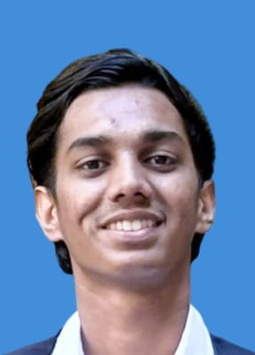

|  | Navaneeth B||Fresher I 🩷 Web development 🚀 Connect With MeDetail-oriented and results-driven Web Developer with a strong foundation in front-end and back-end development. Skilled in building responsive, user-friendly, and scalable web applications using technologies like HTML, CSS, JavaScript, React, andNode.js. Proficient in working with databases (MySQL,MongoDB ) and version control systems like Git. Experienced in collaborating within Agile/DevOps environments to deliver high-quality projects on time. Passionate about clean code, problem-solving, and continuously learning new technologies to enhance development efficiency and user experience. |
| Institute | Board | Grade | Passing Year | Result |
|---|---|---|---|---|
| MSCHSS Peradala Neerchal | Kerala | 10 th | 2019 | 89% |
| SM Kushe | Karnataka | 12 th | 2021 | 71% |
| Srinivas Institute Of technology | Karnataka | Degree | 2025 | 71% |
Connect With Me :